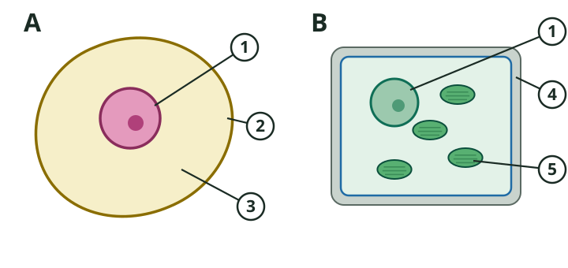

Einstieg · Do Now · Wiederholung
Aufgabe:
a)Nenne vier Bestandteile einer Pflanzenzelle.
b)Unterstreiche den Bestandteil, der der Zelle ihre feste Form gibt.
Einstieg · Impuls
Zerreißt euren Papierstreifen.
Zieht vorsichtig an der Haut auf eurem Handrücken. Lasst dann los.
Vergleicht mit eurer Partnerin oder eurem Partner:
Was ist bei Papier und Haut anders?
Einstieg · Fragenentwicklung
Haut besteht aus Zellen. Papier besteht aus Pflanzenteilen.
Erarbeitung 1 · Lesen
Lies den Text und M1.
Markiere pro Absatz höchstens zwei Schlüsselwörter.
Setze ein ? an Stellen, die du nicht verstehst.
Lies zuerst die Überschrift und das Bild.
Danach liest du den Text Absatz für Absatz.
Erarbeitung 2

2Benenne die in M2 mit Ziffern gekennzeichneten Zellbestandteile.
| Ziffer | Zellbestandteil |
|---|---|
| 1 | |
| 2 | |
| 3 | |
| 4 | |
| 5 |
Tipp: Beginne mit Aufgabe 2.
Erarbeitung 2
1Erkläre, aus welchen Gründen Tierzellen ihre Nährstoffe nicht selbst herstellen können.
Erarbeitung 2 · Hilfen
Zell-kern · Zell-wand
Zell-plas-ma
Zell-mem-bran
Chlo-ro-plast
Mi-to-chon-dri-en
Tierzellen haben keine ______, deshalb können sie keine ______ betreiben.
Erkläre, wozu Pflanzenzellen Chloroplasten und Mitochondrien brauchen.
Erarbeitung 3 · Aufgabe 3
3Ordne die Zellen in M2 den Pflanzen oder den Tieren zu. Begründe deine Zuordnung.
| Zelle | Zuordnung |
|---|---|
| A | |
| B |
Erarbeitung 3 · Vergleich vorbereiten
Tippe ein Teil an
Wähle oben Pflanzenzelle oder Tierzelle. Tippe Teile an.
Sicherung 2 · Vergleich
| Bestandteil | Tierzelle | Pflanzenzelle |
|---|---|---|
| Zellmembran | ||
| Zellplasma | ||
| Zellkern | ||
| Mitochondrien | ||
| Zellwand | ||
| Chloroplasten |
Aufgabe: Vergleiche Tierzelle und Pflanzenzelle. Trage „ja“ oder „nein“ ein.
Zelle antippen: erst „ja“, dann „nein“, dann leer.
Reflexion
Papier wird aus Holz gemacht.
Erkläre, welchen Zellbestandteil du beim Zerreißen von Papier zerstörst.
Nenne einen Unterschied zwischen Tierzelle und Pflanzenzelle. Schreib auf den Zettel und gib ihn ab.
Reflexion · Selbsteinschätzung
Tippe an, wie sicher du dich fühlst. Das ist nur für dich.